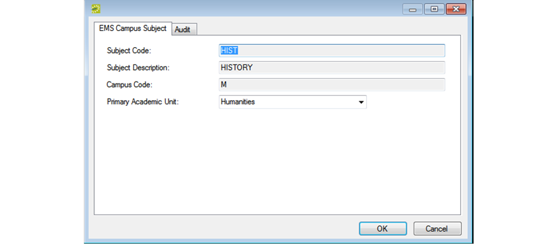

Configure the Primary Academic Unit for a Subject
Typically, a subject is associated with a single academic unit; however, there may be times when you must assign a subject to multiple academic units, or departments. For example, you may need to assign a History class to a department in the College of Arts and Sciences and to a department in the College of Liberal Arts. In this case, you must configure a primary academic unit for the subject. A primary academic unit for a subject ensures the following:
- When {{product}} assigns a building preference to a course that belongs to a shared subject, it uses the building preference for the primary academic unit.
- When {{product}} publishes a course that belongs to a shared subject, it uses the Group, Event Type, and Reservation Source for the primary academic unit.
- When a course that belongs to a shared subject is displayed in the Navigator or Course Navigator, the primary academic unit for the course is displayed on the Course Info tab.
To configure a primary academic unit for a subject
- On the EMS Academic Planning menu bar, click Academic Planning > Configuration > Subjects. The Subjects window opens, listing all the subjects currently configured in your EMS database for the indicated domain.
- On the Domain dropdown list, select the domain for which you are configuring the subject, select the appropriate subject, and then click Edit. The Subject dialog box opens. This dialog box lists the code and description for the selected subject and the code for the selected domain.
Tip: This information was imported from your SIS and you cannot edit it.

- Select the primary academic unit for the subject. (The default value is None.)
- Click OK. The Subject dialog box closes. You return to the Subjects window with the newly configured subject automatically selected.